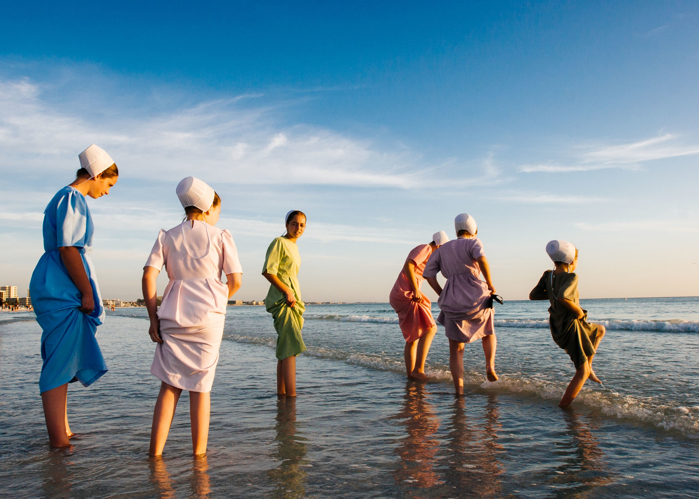
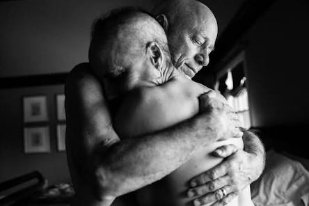
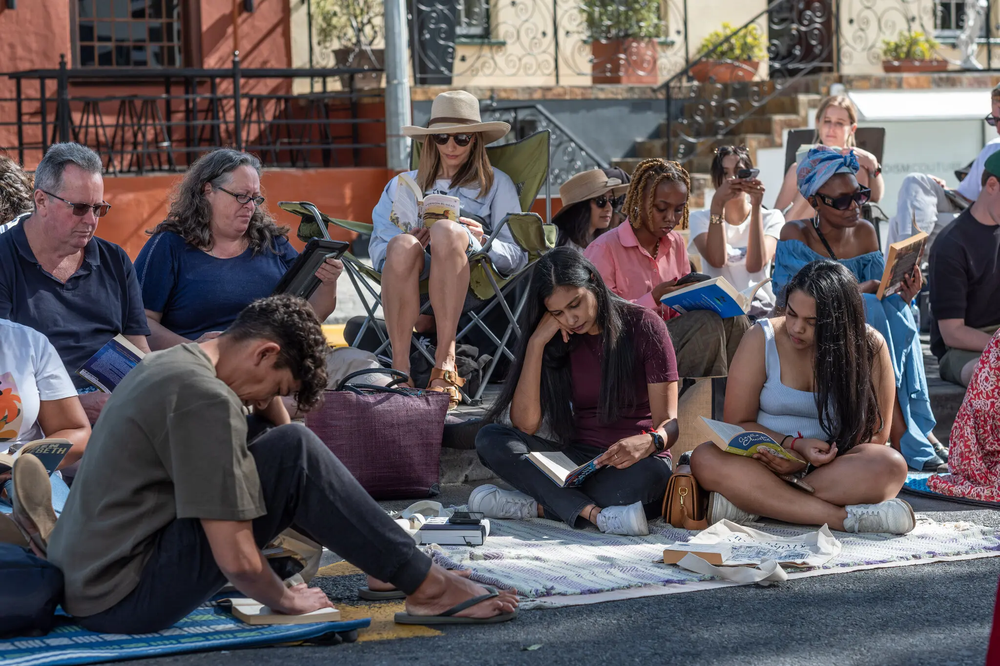

New York times Website
May 10, 2026
A simple guide to modern website design principles, layout, and user experience.
May 10, 2026
A simple guide to modern website design principles, layout, and user experience.
In 1973, Sara Krulwich visited 29 newspapers, looking for a job after graduating from the University of Michigan. She met with male photo editors who mostly scoffed at the idea of a woman as a news photographer. One editor, she said, told her that hiring a woman was like “hiring half a person.” When finally she did land a temporary job at the Providence Journal, an editor cornered her in the darkroom and tried to kiss her, she recounts. Ms. Krulwich was hired by The New York Times in 1979, a year after the settlement of a suit by women employees over sex discrimination in hiring, pay and promotion. She was among the first female staff photographers, and she recalls facing rampant sexism from many of her colleagues. Minority photographers also “had a very hard time,” she added. These difficulties, she said, lasted until Carolyn Lee became the first woman to lead the department in 1984.

The image features two Otavaleño vendors in traditional attire arranging colorful, hand-woven alpaca blankets and textiles at the open-air market in Otavalo, Ecuador. This photo is part of a curated travel column focusing on vibrant, indigenous cultural scenes in South America. For more information, visit The New York Times travel section.

This week’s image comes from the article “What a Bike Ride Showed Me About Apartheid’s Legacy,” published on May 5. To write the article, a New York Times reporter joined a group of cyclists on a route meant to break down Cape Town’s lingering racial and economic barriers. The original caption reads: “Residents read books on the street during an Open Streets event on Bree Street in central Cape Town.”
